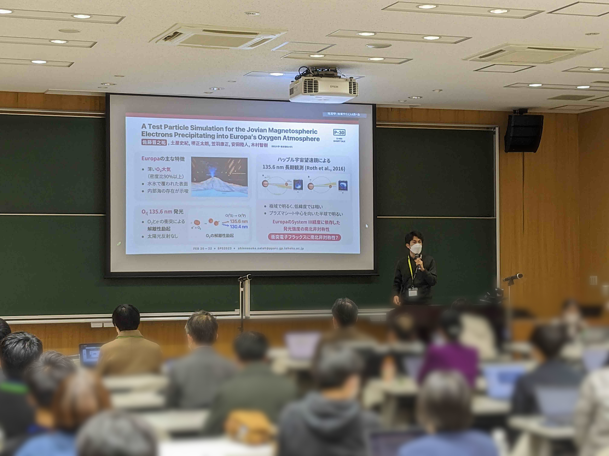

Publications
Papers
Kondo, H., Tsuchiya, F., Kagitani, M., Satoh, S., Misawa, H., Nakamura, Y., Murakami, G., Kimura, T., Yamazaki, A., Yoshikawa, I., Kita, H., & Tao, C. (2024). Solar wind response of the dawn-dusk asymmetry in the Io plasma torus using the Haleakala T60 and HISAKI satellite observations. Journal of Geophysical Research: Space Physics, 129, e2024JA032840. https://doi.org/10.1029/2024JA032840
Satoh, S., Tsuchiya, F., Sakai, S., Kasaba, Y., Nichols, J. D., Kimura, T., Yasuda, R., & Hue, V. (2024). Changes in the plasma sheet conditions at Europa's orbit retrieved from lead angle of the satellite auroral footprints. Geophysical Research Letters, 51, e2024GL110079. https://doi.org/10.1029/2024GL110079
Yasuda, R., Kimura, T., Misawa, H., Tsuchiya, F., Cecconi, B., Kasaba, Y., Satoh, S., Sakai, S., & Louis, C. K., (2024). Ray Tracing for Jupiter's Icy Moon Ionospheric Occultation of Jovian Auroral Radio Sources. Journal of Geophysical Research: Space Physics, 129, e2024JA032454. https://doi.org/10.1029/2024JA032454
Satoh, S., Tsuchiya, F., Sakai, S., Kasaba, Y., Yasuda, R., & Kimura, T. (2023). Interpretation of the North-South Asymmetric Oxygen Aurora Morphology on Europa Using Test Particle Simulation. Journal of Geophysical Research: Space Physics, 128, e2023JA031519. https://doi.org/10.1029/2023JA031519
Presentations
- Shinnosuke Satoh, Kohki Tachi, Fuminori Tsuchiya, Yuto Katoh, Yasumasa Kasaba, and John E. Connerney, EMIC Waves at Ganymede Detected by Juno's Magnetic Field Observation, Symposium on Planetary Science 2025, Miyagi, Japan, Mar 2025 (oral)
- Shinnosuke Satoh, Ryoya Sakata, Fuminori Tsuchiya, Shotaro Sakai, Naoki Terada, Yasumasa Kasaba, Natsuko Matsushita, Kanako Seki, and Hiroyuki Shinagawa, A Multi-Fluid MHD Simulation for Europa's Ionosphere Affected by Variations in the Jovian Magnetospheric Plasma and Magnetic Field, The 156th SGEPSS General Assembly, Tokyo, Japan, Nov 2024 (poster)
- Shinnosuke Satoh, Fuminori Tsuchiya, Shotaro Sakai, Yasumasa Kasaba, Jonathan D. Nichols, Tomoki Kimura, Rikuto Yasuda, and Vincent Hue, Plasma Sheet Conditions at Europa's Orbit Retrieved from Lead Angle of the Satellite AUroral Footprints, Magnetospheres of Outer Planets Meeting 2024, MN, United States, Jul 2024 (poster) (group photo)
- Shinnosuke Satoh, Fuminori Tsuchiya, Shotaro Sakai, Yasumasa Kasaba, Jonathan D. Nichols, Tomoki Kimura, Rikuto Yasuda, and Vincent Hue, Plasma Sheet Conditions at Europa's Orbit Retrieved from Lead Angle of the Satellite AUroral Footprints, Japan Geoscience Union Meeting 2024, Chiba, Japan, May 2024 (oral)
- Shinnosuke Satoh, Fuminori Tsuchiya, Shotaro Sakai, Yasumasa Kasaba, Jonathan D. Nichols, Tomoki Kimura, Rikuto Yasuda, and Vincent Hue, Auroral Footprints of Europa in Jupiter's Atmosphere Associated with the Plasma Sheet Parameters, Symposium on Planetary Science 2024, Miyagi, Japan, Feb 2024 (oral)
- Shinnosuke Satoh, Fuminori Tsuchiya, Shotaro Sakai, Yasumasa Kasaba, Rikuto Yasuda, and Tomoki Kimura, Interpretation of the North-South Asymmetric Oxygen Aurora Morphology on Europa Using Test Particle Simulation, DPS-EPSC 2023, TX, United States, Oct 2023 (oral)
- Shinnosuke Satoh, Fuminori Tsuchiya, Shotaro Sakai, Yasumasa Kasaba, Jonathan D. Nichols, Rikuto Yasuda, and Tomoki Kimura, Analyzing Brightness of Europa's Auroral Footprint with the HST/STIS Dataset Taken in 2014 and 2022, The 154th SGEPSS General Assembly, Miyagi, Japan, Sep 2023 (poster)
- Shinnosuke Satoh, Fuminori Tsuchiya, Shotaro Sakai, Rikuto Yasuda, and Yasumasa Kasaba, Interpretation of the North-South Asymmetric Oxygen Aurora Morphology on Europa Using Test Particle Simulation, Japan Geoscience Union Meeting 2023, Chiba, Japan, May 2023 (oral)
- Shinnosuke Satoh, Fuminori Tsuchiya, Shotaro Sakai, Rikuto Yasuda, Yasumasa Kasaba, and Tomoki Kimura, A Test Particle Simulation of Jovian Magnetospheric Electrons Precipitating into Europa's Oxygen Atmosphere, Symposium on Planetary Science 2023, Miyagi, Japan, Feb 2023 (poster)
- Shinnosuke Satoh, Fuminori Tsuchiya, Shotaro Sakai, Rikuto Yasuda, Yasumasa Kasaba, and Tomoki Kimura, A Test Particle Simulation of Jovian Magnetospheric Electrons Precipitating into Europa's Oxygen Atmosphere, The 152nd SGEPSS General Assembly, Kanagawa, Japan, Nov 2022 (poster)
- Shinnosuke Satoh, Fuminori Tsuchiya, Shotaro Sakai, Rikuto Yasuda, Yasumasa Kasaba, and Tomoki Kimura, A Test Particle Simulation of Jovian Magnetospheric Electrons Precipitating into Europa's Oxygen Atmosphere, Magnetospheres of Outer Planets Meeting 2022, Liège, Belgium, Jul 2022 (poster) (group photo)
- Shinnosuke Satoh, Fuminori Tsuchiya, Shotaro Sakai, Rikuto Yasuda, and Yasumasa, Kasaba, A Test Particle Simulation of Jovian Magnetospheric Electrons Precipitating into Europa's Oxygen Atmosphere, Japan Geoscience Union Meeting 2022, Chiba, Japan, May 2022 (oral)
{kind=link}
{kind=link}